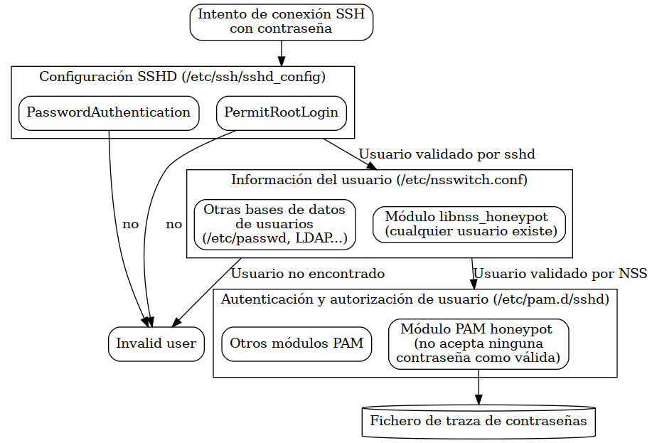

Honeypot para mi raspberry
Table of Contents
1. TL;DR
He implementado un honeypot de SSH dockerizado con un módulo PAM y un módulo NSS. El código está en https://github.com/alvarogonzalezsotillo/pam-nss-honeypot.
Las contraseñas capturadas están en https://github.com/frikismos/passwords-in-honeypot/commits/master
2. Intentos de conexión a mi SSH
Tengo instalado un servidor SSH en una raspberry pi. Lo utilizo de nodo bastión para acceder a los ordenadores de mi casa.
Solo por curiosidad, revisé los ficheros de syslog para comprobar cómo se localizaban los accesos, tanto correctos como incorrectos. En mi caso, estos registros están en el fichero /var/log/auth.log
#!/bin/bash tail -f /var/log/auth.log | grep "Failed password"
Ejecutando el script anterior se pueden ver en tiempo real los intentos fallidos. Depende del momento, pero ¡suele haber varios por minuto! Un enjambre de bots están patrullando todo internet buscando servidores SSH, y una vez localizados intentan acceder a ellos.
Mar 21 18:05:56 raspberrypi sshd[15727]: Failed password for invalid user root from 61.177.173.31 port 59272 ssh2 Mar 21 18:07:56 raspberrypi sshd[15766]: Failed password for invalid user root from 179.60.147.143 port 38096 ssh2 Mar 21 18:16:01 raspberrypi sshd[15926]: Failed password for invalid user sysop from 195.226.194.242 port 35010 ssh2 Mar 21 18:18:11 raspberrypi sshd[16039]: Failed password for invalid user centos from 179.60.147.143 port 34830 ssh2 Mar 21 18:28:22 raspberrypi sshd[16190]: Failed password for invalid user default from 179.60.147.143 port 36374 ssh2 Mar 21 18:29:49 raspberrypi sshd[16230]: Failed password for invalid user admin from 221.165.87.21 port 41166 ssh2 Mar 21 18:29:52 raspberrypi sshd[16230]: Failed password for invalid user admin from 221.165.87.21 port 41166 ssh2 Mar 21 18:33:06 raspberrypi sshd[16277]: Failed password for invalid user server from 195.226.194.142 port 29648 ssh2 Mar 21 18:38:36 raspberrypi sshd[16339]: Failed password for invalid user centos from 179.60.147.143 port 4016 ssh2 Mar 21 18:42:27 raspberrypi sshd[16439]: Failed password for invalid user root from 61.177.173.31 port 26981 ssh2 Mar 21 18:42:30 raspberrypi sshd[16439]: Failed password for invalid user root from 61.177.173.31 port 26981 ssh2 Mar 21 18:42:33 raspberrypi sshd[16439]: Failed password for invalid user root from 61.177.173.31 port 26981 ssh2 Mar 21 18:42:45 raspberrypi sshd[16457]: Failed password for invalid user maria from 31.41.244.124 port 28964 ssh2 Mar 21 18:43:56 raspberrypi sshd[16467]: Failed password for invalid user root from 61.177.173.31 port 22820 ssh2 Mar 21 18:43:59 raspberrypi sshd[16467]: Failed password for invalid user root from 61.177.173.31 port 22820 ssh2
Aunque las trazas de syslog ofrecen bastante información, no es posible saber qué contraseña ha sido utilizada. Esto me parecía importante, ya que no estaba seguro de si las contraseñas que se utilizan se parecen a las mías.
3. Conseguir las contraseñas
Openssh-server no vuelca las contraseñas incorrectas al log por razones de seguridad (puede ser un usuario legítimo con un simple typo). Para conseguir estas contraseñas había varias opciones
- Usar un honeypot de ssh: me parecía un problema que los clientes de ssh detectasen que se no se trataba de un servidor ssh real. Hay multitud de honeypots entre los que elegir
- Compilar mi propia versión de openssh-server: no quería estar pendiente de las actualizaciones de seguridad, volviendo a compilar el servidor
- Desarrollar mi propio módulo PAM y añadírselo al servidor ssh. PAM (Pluggable Authentication Module) es el sistema utilizado por Linux para autenticar a los usuarios. Si el código no era complicado, podía estar razonablemente confiado en no crear problemas de seguridad
La opción más evidente para un hobby project es desarrollar algo en C. Aquí hemos venido a jugar 🤡.
3.1. Módulo PAM
Un módulo PAM es una librería de enlace dinámico (.so) con funciones especiales para autentificar un usuario. La función más interesante sería como la siguiente:
PAM_EXTERN int pam_sm_authenticate( pam_handle_t *pamh, int flags,int argc, const char **argv ) { const char* password = NULL; pam_get_authtok(pamh, PAM_AUTHTOK, (const char **)&password, NULL); // AQUÍ TENGO LA CONTRASEÑA EN LA VARIABLE password log_somewhere(password); return PAM_PERM_DENIED }
Esta función se llamará con la información de login del usuario, y devolverá PAM_PERM_DENIED si dicha información no permite su autentificación.
Este módulo debe instalarse en el servicio PAM correspondiente. La idea es seguir utilizando el resto de la configuración PAM, pero que se deba llamar a este módulo en todas las ocasiones. Según la documentación PAM, este módulo es suficiente, lo que quiere decir que si no permite el login tampoco lo prohibe, y se consulta al resto de módulos.
Esto se consigue añadiendo la siguiente línea al principio del fichero /etc/pam.d/sshd:
auth sufficient pam_honeypot.so
La librería pam_honeypot.so debe localizarse en /lib/$MULTIARCH/security. Por ejemplo, en un x86_64 estará en /lib/x86_64-linux-gnu/security. El valor de MULTIARCH se puede conseguir con el comando gcc -print-multiarch.
3.2. … pero el módulo PAM no funciona
Si se instala el módulo PAM de la forma descrita, no se consegirán las contraseñas de todos los intentos de login ☹️. Si el usuario existe en el sistema, se conseguirá la contraseña, pero si no existe, la contraseña será algo parecido a INVALID. Además, si se configura sshd para que no permita el usuario root, tampoco se llega a llamar nunca al módulo PAM. Esto dejaría fuera del log de contraseñas a una gran catidad de intentos de login.
Me costó un poco encontrar la respuesta, pero cuando el sistema detecta que el usuario no existe, oculta la contraseña al módulo PAM (imagino que para no propagar contraseñas de usuarios legítimos que se confunden de servidor). Este diagrama explica la relación entre SSH, NSS y PAM
La solución es convencer a Linux de que todos los usuarios existen, lo que pasa por desarrollar un módulo NSS.

3.3. Módulo NSS
Name Service Switch es la forma en que Linux configura las bases de datos donde consulta usuarios, grupos de usuarios, nombres de hosts… Por ejemplo, la forma tradicional de almacenar usuarios es el fichero /etc/passwd. En vez de basar los usuarios directamente en ese fichero, NSS puede utilizar el proveedor files, que lee ese fichero. Se pueden crear otros proveedores de usuarios, de forma que Linux reconozca los usuarios de, por ejemplo, un servicio LDAP. Todos los proveedores se configuran en el fichero /etc/nsswitch.conf.
Un módulo de NSS es una librería de enlace dinámico con funciones especiales. En el ejemplo siguiente, cualquier usuario se considera existente, y se le asignan unos valores ficticios a su contraseña, directorio inicial, shell, UID y GID.
const char* pw_passwd=; const char* pw_gecos=; const char* pw_dir=""; const char* pw_shell="/bin/bash"; enum nss_status _nss_honeypot_getpwnam_r(const char *name, struct passwd *result, char *buffer, size_t buflen, int *errnop) { result->pw_name = name; result->pw_passwd = "contraseña, posiblemente hasheada"; result->pw_gecos = "Nombre real del usuario"; result->pw_dir = "/tmp"; result->pw_shell = "/bin/bash"; result->pw_uid = 1000; result->pw_gid = 1000; return NSS_STATUS_SUCCESS; }
Una vez compilada la librería e instalada en /lib/$MULTIARCH debe añadirse al fichero /etc/nsswitch.conf/, de forma que se utilice la base de datos honeypot si no se encuentra el usuario en las bases de datos habituales del sistema:
.... passwd: files honeypot group: files shadow: files ....
Las instrucciones concretas de compilación e instalación se encuentran en build-install-nss-pam.sh .
3.4. … pero no en mi sistema real
Aunque el código no utiliza memoria dinámica, ni punteros, ni arrays, siempre puede haber alguna vulnerabilidad en alguna parte. Estas librerías no deberían usarse en un sistema real. Como medida de precaución, he creado un Dockerfile para ejecutarlo en un entorno algo más controlado.
En una imagen basada en Debian, instalo las dependencias, compilo e instalo los módulos PAM y NSS, y creo el usuario con UID 1000. Este usuario se corresponde con el UID que el módulo NSS utilizará para todos los posibles nombres de usuario, y que acabará siendo el UID del usuario de la máquina host de docker.
Detalles en el script build-docker.sh y en el Dockerfile.
4. ¿Me atrevo contra un intruso?
Este es un honeypot de baja interacción. En un futuro, mi intención es dejar que el atacante entre en el sistema y monitorizar sus acciones. El sistema debería ser lo más real posible, lo que implica que es una actividad arriesgada.
Mi plan es separar la red principal de mi casa de la red a la que accedería el intruso, quizás mediante un NAT y otras reglas de firewall.
- El usuario reconocido por NSSWITCH será siempre el mismo, asociado al UID 10000
- El UID 10000 se creará en el ordenador host de docker, con el mismo nombre
- Tras dejar entrar a un atacante, el módulo PAM dejará de autentificar usuarios
- Con solo un atacante a la vez se podrá entender mejor qué es lo que hace
- La shell podría ser tlog.